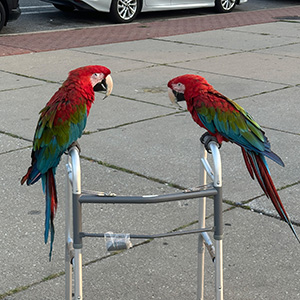
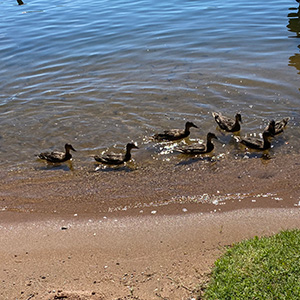
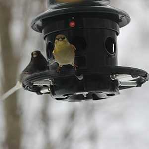
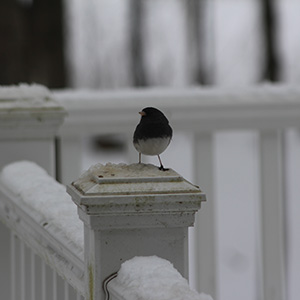
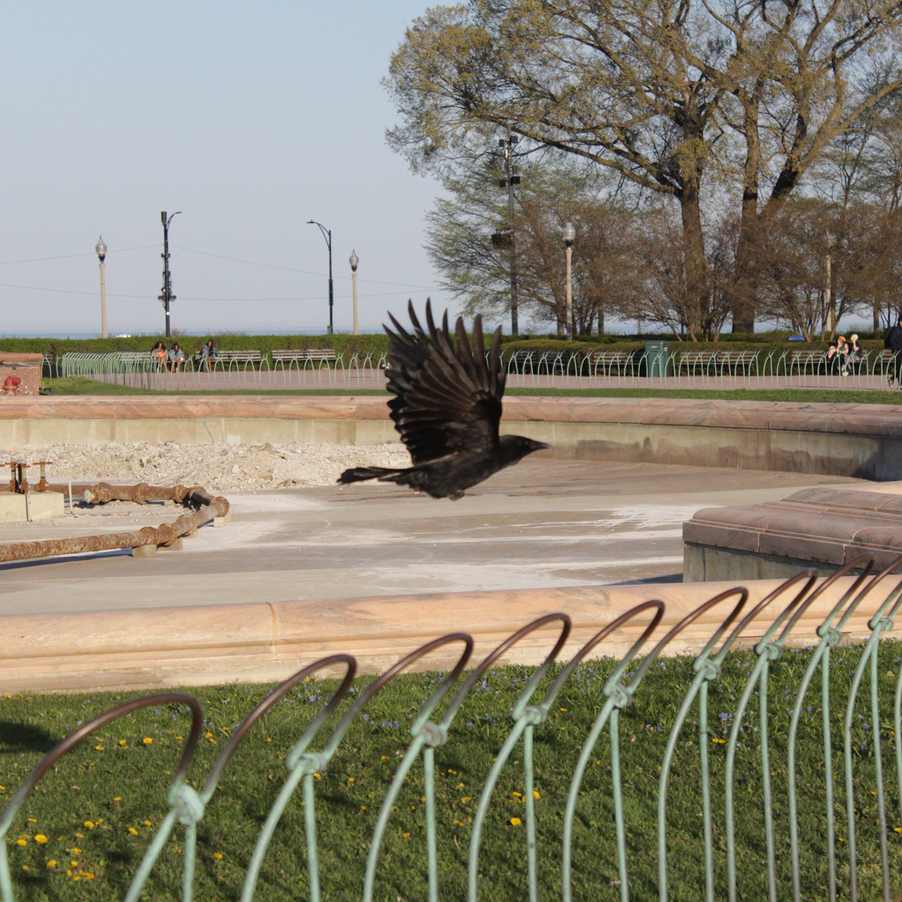
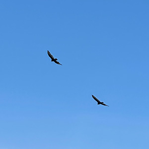

Birds and Human Perception
Preface
This page focuses on human perception of different birds rather than organization through scientific classification or habitat. This involves looking more at cultural significance as well as human attitude. Some birds are seen in a positive light displaying ideas of peace, beauty, and companionship. However, others are ignored or seen as pests or dirty.
Every single person has bias. When it comes to birds, a lot of the bias, either positive or negative, stems from a few things. These are color, uniqueness, location, and human-bird conflict. There was a paper published in Ecological Applications that looked into these traits in birds from Arizona. They found that birds that are more brightly colored, more unique, found in more rural areas, as opposed to urban areas, and those that did not get in the way of human life were viewed more positively.
A similar finding was reported by Stanford University who looked at birds and cultural significance in Costa Rica. They found that the prettier the birds and the nicer the songs they sing, the more positive they were perceived. In line with the other paper, they found that the birds in the rainforest and more rural areas were more at risk of extinction due to climate change and loss of habitat.
I wanted to build on this research and bring awareness to our subconcious biases. The first group I made focuses on birds that are appreciated and valued. These include parrots, cardinals, ducks, goldfinches, woodcocks, and snowbirds. These birds are very frequently seen in books, art, and everyday life as cute and friendly. The second group more closely focuses on birds that are overlooked and discarded by humans. These are pigeons, sparrows, Canadian geese, American crows, starlings, and vultures. Despite their ecological importance, these birds are thought of as dirty, aggressive, or even associated with death.
By comparing these two groups side by side, this page encourages viewers to rethink their perception of these beautiful birds. The goal is to image all of these birds in a positive light to redirect the attention away from cultural assumptions and more towards the beauty of the birds themselves. This page invites users to reflect on how our perception shapes the way we see the natural world. By doing so, we hope that we can all come together to not only recognize every bird's ecological importance, but to save them from increasing threats by climate change.
Positively Valued / Symbolic Birds
This group includes birds associated with peace, beauty, and companionship. For example, the cardinal is known for its symbolism for a passed loved one visiting you and is often sought out. The American Woodcock is a recent TikTok sensation known for its funny dance that is actually used to find earthworms under the dirt.

Parrots
Colorful Communicators

Cardinal
Symbolic Beauty

Ducks
Affable Waterfowl

Goldfinch
Bright Songbird

Woodcock
Quirky Shorebird

Snowbird
Quiet Visitor
Overlooked / Negatively Perceived Birds
This group includes birds often dismissed or disliked, despite their ecological importance. One such bird is the American crow which is often associated with death. However, it is actually a highly intelligent bird that will even bring you gifts if you befriend them. Another bird that is seen negatively is the pigeon. They are often thought of as being pests, but they were once domesticated by humans and were thrown out on the streets. My page aims to make people change their perception of birds, especially those seen in a negative light.

Pigeon
Dirty Pest

American Crow
Death Bringer

Canadian Goose
Aggressive Grazer

Sparrow
Common Percher

Turkey Vultures
Corpse Scavengers

Starling
Noisy Invader
Data: Perception vs Ecological Role
| Bird | Public Perception | Ecological Role |
|---|---|---|
| Parrot | Colorful, intelligent | Seed dispersal, forest regeneration |
| Duck | Friendly | Aquatic ecosystem balance |
| Pigeon | Pest | Seed dispersal, urban adaptation |
| Sparrow | Common | Insect control |
| Goose | Aggressive | Grassland maintenance |
| Vulture | Associated with death | Scavenger |
| Cardinal | Colorful, symbolic | Seed dispersal, insect control |
| Goldfinch | Cheerful, bright | Seed specialist |
| Woodcock | Viral sensation, uncommon | Soil ecosystem, indicator of healthy forest |
| Snowbird | Calm, winter arrival | Ground seed eater |
| Black Crow | Associated with death | Scavenger, highly intelligent |
| Starling | Invasive, noisy | Insect control, invasive competitor |